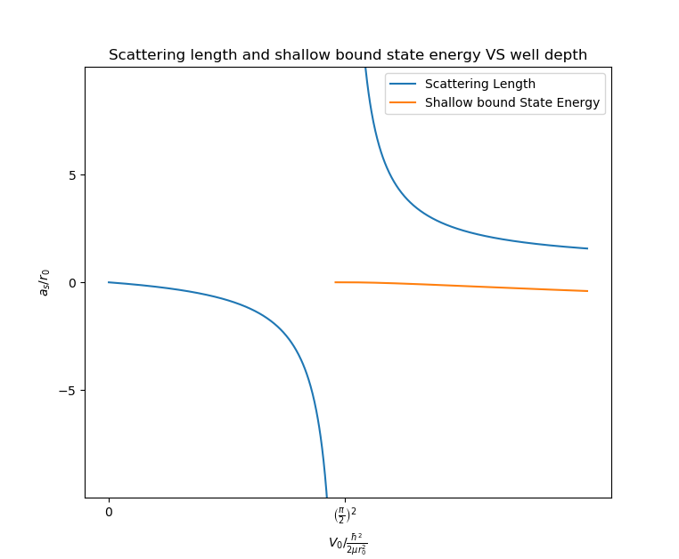

两体散射
Table of Contents
1. Scattering Length
1.1. Schrodinger EQ
1.1.1. Equation
两体运动的相对运动的 Schrodinger 方程为
\begin{align} \left[ -\frac{\hbar^2}{2\mu}\nabla^2 + V(r) -E\right]\psi = 0 \end{align}变形为
\begin{align} \nabla^2 \psi = \left[ \frac{2\mu}{\hbar^2} V(r) - k^2 \right]\psi \end{align}其中 \(k^2 = E/\frac{\hbar^2}{2\mu}\) . 写出 \(\nabla^2\) 在球 坐标系中的形式, 方程变为
\begin{align} \left[\frac{1}{r^2}\frac{\partial}{\partial r}r^2 \frac{\partial}{\partial r} + \frac{1}{r^2 \sin \theta}\frac{\partial}{\partial \theta}\sin \theta \frac{\partial}{\partial \theta} + \frac{1}{r^2\sin^2 \theta}\frac{\partial^2}{\partial\varphi^2} \right] \psi = \left[ \frac{2\mu}{\hbar^2} V(r) - k^2 \right]\psi \end{align}1.1.2. 分离变量
分离变量, 令
\begin{align} \psi(r,\theta,\phi) = R(r)\Theta(\theta)\Phi(\phi) \end{align}代回方程, 并且两边同时除以 \(R(r)\Theta(\theta)\Phi(\varphi)\) 可得
\begin{align} \frac{1}{R}\frac{1}{r^2}\frac{\mathrm{d}}{\mathrm{d} r}r^2 \frac{\mathrm{d}}{\mathrm{d} r} R+ \frac{1}{\Theta}\frac{1}{r^2 \sin \theta}\frac{\mathrm{d}}{\mathrm{d} \theta}\sin \theta \frac{\mathrm{d}}{\mathrm{d} \theta}\Theta +\frac{1}{\Phi} \frac{1}{r^2\sin^2 \theta}\frac{\mathrm{d}^2}{\mathrm{d}\varphi^2}\Phi = \frac{2\mu}{\hbar^2} V(r) - k^2 \end{align}所有含有 \(\varphi\) 的项都在方程左边第三项, 与 \(r,\theta\) 没有耦合, 所以 它一定是一个常数. 因为其它的项中都与 \(\theta\) 无关, \(\theta\) 改变时其它 项保持不变. 记这个常数为 \(-m^2\) 即
\begin{align} \frac{1}{\Phi}\frac{\mathrm{d}^2}{\mathrm{d}\varphi^2}\Phi = -m^2 \end{align}将它代回原方程, 原方程变为
\begin{align} \frac{1}{R}\frac{1}{r^2}\frac{\mathrm{d}}{\mathrm{d} r}r^2 \frac{\mathrm{d}}{\mathrm{d} r} R+ \frac{1}{\Theta}\frac{1}{r^2 \sin \theta}\frac{\mathrm{d}}{\mathrm{d} \theta}\sin \theta \frac{\mathrm{d}}{\mathrm{d} \theta}\Theta - \frac{m^2}{r^2\sin^2 \theta} = \frac{2\mu}{\hbar^2} V(r) - k^2 \end{align}\(\theta\) 和 \(r\) 也没有耦合, 同理可以把与 \(\theta\) 有关的项单拎出来, 是一个常数, 记为 \(-\lambda\) ,即
\begin{align} \frac{1}{\Theta}\frac{1}{ \sin \theta}\frac{\mathrm{d}}{\mathrm{d} \theta}\sin \theta \frac{\mathrm{d}}{\mathrm{d} \theta}\Theta - \frac{m^2}{\sin^2 \theta} = -\lambda \end{align}上述关于 \(\theta\) 的方程的解是连带 Legendre 多项式 \(P_l^m(\cos\theta)\), 本征值 \(\lambda\) 只能取值为 \(l(l+1)\) , \(l\) 是个 整数. 如果 \(m=0\) ,解则是一个 Legendre 多项式. Supplementary 中用 Frobenius 方法(即级数解法) 求解 \(m= 0\) 的情况.
剩下的只有 \(r\) 的方程为
\begin{align} \frac{1}{R}\frac{1}{r^2}\frac{\mathrm{d}}{\mathrm{d} r}r^2 \frac{\mathrm{d}}{\mathrm{d} r} R = \frac{2\mu}{\hbar^2} V(r) - k^2 +\frac{l(l + 1)}{r^2} \end{align}即
\begin{align} \frac{1}{r^2}\frac{\mathrm{d}}{\mathrm{d} r}r^2 \frac{\mathrm{d}}{\mathrm{d} r} R -\left[ \frac{2\mu}{\hbar^2} V(r) - k^2 +\frac{l(l + 1)}{r^2}\right]R =0 \end{align}它的一般解的形式是球 Bessel 函数.
1.1.3. \(m=0\) and \(l=0\)
由于散射势 \(V(r)\) 是球对称的, 那么其波函数应该沿入射方向是轴对称的. 选 取入射方程是 \(z\) 方向, 那么角动量在 \(z\) 方向上动量为 \(0\) (可与经典 散射类比). 也就是说 \(m =0\) . 在 \(m=0\) 的情况下， 本征波函数的形式为
\begin{align} \psi = R_{kl}(r) P_l(\cos \theta) \end{align}对于径向关于 \(r\) 方程可以做变量代换
\begin{align} R_{kl}(r) = \frac{\chi_{kl}(r)}{kr} \end{align}设入射波函数为 \(\Psi\) ,它可以是不同分波的本征波函数的任意叠加, 即
\begin{align} \Psi = \sum_{l = 0}^{+\infty} \frac{\chi_{kl}(r)}{kr}P_l(\cos\theta) \end{align}径向方程为
\begin{align} \frac{\mathrm{d}^2}{\mathrm{d}r^2}\chi -\left[ \frac{2\mu}{\hbar^2} V(r) - k^2 +\frac{l(l + 1)}{r^2}\right]\chi =0 \end{align}以下只关心 s 波散射, 也就是 \(l=0\) ,方程化为
\begin{align} \frac{\mathrm{d}^2}{\mathrm{d}r^2}\chi =\left[ \frac{2\mu}{\hbar^2} V(r) - k^2 \right]\chi \end{align}1.2. Scattering Length
考虑有限力程的散射, 也就是 \(V(r>r_0)=0\) .因此, 对于力程之外, 方程化为
\begin{align} \frac{\mathrm{d}^2}{\mathrm{d}r^2}\chi =- k^2 \chi \end{align}其中 \(k^2 = E/\frac{\hbar^2}{2\mu}\) ,很明显, \(E>0\) , 是一个散射 态. 容易解得
\begin{align} \chi_k(r>r_0) = A \sin (kr +\delta_{k}) \end{align}在 \(r=r_0\) 处的 \(r\) 连接条件为
\begin{align} \left.\frac{\chi'(r>r_0)}{\chi(r>r_0)}\right|_{r=r_0} = \frac{k\cos(kr_0 +\delta_k)}{\sin(kr_0\delta_{k})} = \left.\frac{\chi'(r < r_0)}{\chi(r < r_0)}\right|_{r=r_0} \end{align}低能散射下, \(kr_0\approx 0\) ,取 \(kr_0\) 的 Leading order,
\begin{align} \left.\frac{\chi'(r>r_0)}{\chi(r>r_0)}\right|_{r=r_0} \approx \frac{k}{\tan \delta_k} \end{align}用以下极限定义散射长度 \(a_s\)
\begin{align} \lim_{k\to 0}\frac{k}{\tan \delta_k} = -\frac{1}{a_s} \end{align}取极限时, 相当于极限的分子分母的 Leading order 系数之比. 如果取到 更高阶, 第二阶为 effective range \(r_{\mathrm{eff}}\)
\begin{align} \frac{k}{\tan \delta_k} = -\frac{1}{a_s} + \frac{1}{2} ** r_{\mathrm{eff}}k^2 \end{align}低能散射时, 如果波函数也只取到 \(k\) 的 Leading order
\begin{align} \chi(r>r_0) \propto& \sin(kr+\delta_k) \approx \sin \delta_k + kr\cos \delta_k \\ &\propto 1+ \frac{k}{\tan\delta_k}r = 1-\frac{r}{a_s} \end{align}2. Square Well and Shallow Bound State
求有限深球方势阱的散射长度随势阱深度的变化, 以及束缚态能量.
球方势阱
\begin{align*} V(r) = \left\{ \begin{aligned} 0 & , r > r_0 \\ -V_0 & , r < r_0 \end{aligned} \right. \end{align*}定态 Schrodinger 方程解的形式为
\begin{align*} \psi(r,\theta,\varphi) = \frac{\chi _l(r)}{r}Y_l^m(\theta,\varphi) \end{align*}对于 \(l=0\) 的 s 分波, 其径向波函数满足
\begin{align*} \frac{\mathrm{d}^2}{\mathrm{d}r^2}\chi_r = -\frac{2\mu}{\hbar^2}[E-V(r)]\chi(r) \end{align*}对于 \(E>0\) 的散射态, 当 \(r > r_0\) 时的径向解为
\begin{align*} \chi(r>r_0)\propto \sin(k r + \delta_k) \end{align*}其中 \(k = \frac{\sqrt{2\mu E}}{\hbar}\) . 当 \(r < r_0\) 时
\begin{align*} \chi(r < r_0) \propto \sin(\kappa r) \end{align*}其中 \(\kappa = \frac{\sqrt{2\mu(E+V_0)}}{\hbar}\) . 在 \(r=r_0\) 处的连接条件为
\begin{align*} \left.\frac{\chi'(r>r_0)}{\chi(r > r_0)}\right|_{r=r_0} = k \frac{\cos(kr_0+\delta_k)}{\sin(kr_0+\delta_k)} = \left.\frac{\chi'(r < r_0)}{\chi(r < r_0)}\right|_{r=r_0} = \frac{\kappa}{\tan(\kappa r_0)} \end{align*}由上式可解得
\begin{align*} \frac{\tan(\delta_k)}{k} = \frac{k \tan(\kappa r_0)\cos(kr_0)-\kappa \sin(kr_0)} {\kappa k + k \tan(\kappa r_0)\sin(kr_0)} \end{align*}由散射长度的定义可得
\begin{align*} -\frac{1}{a_s} =& \lim_{k\to0} \frac{k}{\tan(\delta_k)} \\ =&\lim_{k\to0}\frac{\kappa k + k \tan(\kappa r_0)\sin(kr_0)}{k \tan(\kappa r_0)\cos(kr_0)-\kappa \sin(kr_0)} \\ =&\frac{1}{\frac{\tan(\kappa_0 r_0)}{\kappa_0}-r_0} \end{align*}其中 \(\kappa_0 =\kappa|_{k=0} = \frac{\sqrt{2\mu V_0}}{\hbar}\) . 所以
\begin{align*} a_s = r_0 - \frac{\tan(\kappa_0r_0)}{\kappa_0} \end{align*}无量纲化
\begin{align*} \tilde{a}_s = 1 - \frac{\tan(\sqrt{\tilde{V}_0})}{\sqrt{\tilde{V}_0}} \end{align*}其中 \(\tilde{a}_s = \frac{a_s}{r_0}\) , \(\tilde{V}_0 = \frac{V_0}{\hbar^2/(2\mu r_0^2)}\) . 对于 \(-V_0 < E_b < 0\) 的束缚态
\begin{align*} \begin{cases} \chi(r > r_0)\propto& e^{-k'r} \\ \chi(r < r_0)\propto& \sin (\kappa r) \end{cases} \end{align*}其中 \(k' = \frac{\sqrt{2\mu(-E_b)}}{\hbar}\) . 类似地, 由 \(r = r_0\) 处的连接条件得
\begin{align*} -k' = \frac{\kappa}{\tan(\kappa r_0)} \end{align*}无量纲化的结果为
\begin{align*} -\sqrt{-\tilde{E}_b} = \frac{\sqrt{\tilde{E}_b+\tilde{V}_0}}{\tan(\sqrt{\tilde{E}_b+\tilde{V}_0})} \end{align*}其中 \(\tilde{E}_b = \frac{E_b}{\hbar^2/(2\mu r_0^2)}\) . \(k'\) 在 \(E_b\) 很小下的行为
\begin{align*} k'= \frac{\sqrt{2\mu(-E_b)}}{\hbar}\sim-\frac{\kappa_0}{\tan(\kappa r_0)} = \frac{1}{a_s - r_0} \end{align*}可以看出, 只有当 \(a_s>0\) 时才可能有解. 且在 \(a_s\gg r_0\) 时有
\begin{align*} E_b \sim -\frac{\hbar^2}{2\mu a_s^2} \end{align*}无量纲化的结果为
\begin{align*} \tilde{E}_b \sim -\frac{1}{\tilde{a}_s^2} \end{align*}散射长度随势阱深度的变化, 以及低能束缚态在 \(a_s\gg r_0\) 时的渐进行为如图所示

3. Partial-Wave Expansion
3.1. Expansion of plane waves in spherical harmonics
为讨论分波展开做准备, 先讨论将平面波用 Legendre 函数展开.
考虑沿 \(\vec{k}\) 方向传播的平面波, 其波函数为(未归一的) \(e^{\mathrm{i}\vec{k}\cdot \vec{r}} = e^{\mathrm{i}kr\cos\theta}\) . 其中 \(r = |\vec{r}|\) .如果选取平面波的 传播方向为 \(z\) 方向, 即 \(\vec{k} = k \hat{z}\) , 那么平面波就 可以写为 \(e^{\mathrm{i}kz}\) .
前面已经讨论过, 对于有心力场的 Schrodinger 方程, 其角向 的解是连带 Legendre 函数. 我们考虑的平面波取了传播方向为 \(z\) 方向, 那么角动量的 \(z\) 分量就是零, 这时, 连带 Legendre 函数中 \(m=0\) ,角向解就变为 Legendre 方程.
Legendre 多项 \(P_l(\cos\theta)\) 式在 \(\cos\theta\in [-1,1]\) 上 构成一组完备正交基, 正交完备关系如下
\begin{align} \int_{-1}^1 P_l(\cos\theta) P_{l'}(\cos\theta) \cdot \mathrm{d}\cos\theta = \delta_{l,l'}\cdot\frac{2}{2l+1} \end{align}将平面波用 Legendre 多项式展开
\begin{align} e^{\mathrm{i}kr\cos\theta} = \sum_{l=0}^{\infty} C_l\cdot P_l(\cos\theta) \end{align}将等式两边乘上 \(P_{l'}(\cos\theta)\) 再积分, 利用正交归一性可求得 展开系数 \(C_l\)
\begin{align} C_l = \frac{2l+1}{2}\int_{-1}^1 e^{\mathrm{i}kr\cos\theta} P_l(\cos\theta) \cdot \mathrm{d}\cos\theta \end{align}我们需要的是在 \(r\to\infty\) 时的结果, 因此只需要展开系数 \(C_l\) 在 \(r\to\infty\) 时的渐进结果, 也就是只保留 Leading order . 对上式中的积分用分部 积分法
\begin{align*} & \int_{-1}^1 e^{\mathrm{i}krt} P_l(t) \cdot \mathrm{d}t \\ =&\frac{1}{\mathrm{i}kr} \int_{-1}^1 P_l(t) \cdot \mathrm{d}e^{\mathrm{i}krt} \\ =& \left.\frac{1}{\mathrm{i}kr}e^{\mathrm{i}krt} P_l(t)\right|_{-1}^1 -\frac{1}{\mathrm{i}kr}\int_{-1}^1 e^{\mathrm{i}krt} P'_l(t) \cdot \mathrm{d}t \\ =& \left.\frac{1}{\mathrm{i}kr}e^{\mathrm{i}krt} P_l(t)\right|_{-1}^1 +\frac{1}{(kr)^2}\left[ \left.e^{\mathrm{i}krt} P'_l(t)\right|_{-1}^1 -\int_{-1}^1 e^{\mathrm{i}krt} P''_l(t) \cdot \mathrm{d}t \right]\\ =& \frac{1}{\mathrm{i}kr}\left( e^{\mathrm{i}kr}-e^{-\mathrm{i}kr} e^{\mathrm{i}\pi l} \right) + \mathcal{O}\left(\frac{1}{(kr)^2}\right) \\ =& \frac{2\mathrm{i}^l}{kr}\sin(kr-\frac{1}{2}\pi l) + \mathcal{O}\left(\frac{1}{(kr)^2}\right) \end{align*}其中利用了 \(P_l(1)=1\) 和 \(P_l(-1)=(-1)^l =e^{\mathrm{i}\pi l}\). 所以展开系数为
\begin{align} C_l \sim \frac{(2l+1)\mathrm{i}^l}{kr}\sin(kr-\frac{1}{2}\pi l) P_l(\cos\theta) \quad \quad \mathrm{as} \quad r \to \infty \end{align}那么就求得了平面波展开
\begin{align} e^{\mathrm{i}kr\cos\theta} \sim& \sum_{l=0}^{\infty} \frac{(2l+1)\mathrm{i}^l}{kr}\sin(kr-\frac{1}{2}\pi l) \cdot P_l(\cos\theta)\\ =& \sum_{l=0}^{\infty} \frac{(2l+1)}{2\mathrm{i}kr}\left( e^{\mathrm{i}kr}-e^{-\mathrm{i}kr} e^{\mathrm{i}\pi l} \right) P_l(\cos\theta)\quad \quad \mathrm{as}\quad r \to \infty\cdot \end{align}3.2. Wave Function as \(r \to \infty\)
设入射波函数为 \(\Psi\) ,它可以是不同分波的本征波函数的任意叠加, 即
\begin{align} \Psi = \sum_{l = 0}^{+\infty} \frac{\chi_{kl}(r)}{kr}P_l(\cos\theta) \end{align}径向方程为
\begin{align} \frac{\mathrm{d}^2}{\mathrm{d}r^2}\chi -\left[ \frac{2\mu}{\hbar^2} V(r) - k^2 +\frac{l(l + 1)}{r^2}\right]\chi =0 \end{align}它在 \(r\to\infty\) 时的解为
\begin{align} \Psi \sim& \sum_{l = 0}^{ + \infty} A_{l}\frac{1}{kr}\sin(kr-l\pi/2 + \delta_l)P_l(\cos\theta) \\ =& \sum_{l = 0}^{ + \infty} A_{l}\frac{1}{2\mathrm{i}kr} \left[ e^{\mathrm{i}(kr-\pi l/2 +\delta_{l})} -e^{-\mathrm{i}(kr-\pi l/2 +\delta_{l})} \right]P_l(\cos\theta) \end{align}同时, 当 \(r\to\infty\) 时, 波函数可以写成入射平面波和散射波叠加的形式
\begin{align} \Psi \sim e^{\mathrm{i}kz} +f(\theta)\frac{e^{\mathrm{i}kr}}{r} \quad \quad \mathrm{as}\quad r\to \infty \end{align}将前面平面波的展开式代入上式得
\begin{align} \Psi \sim \sum_{l=0}^{\infty} \frac{(2l+1)}{2\mathrm{i}kr}\left( e^{\mathrm{i}kr}-e^{-\mathrm{i}kr} e^{\mathrm{i}\pi l} \right) P_l(\cos\theta) +f(\theta)\frac{e^{\mathrm{i}kr}}{r} \end{align}3.3. Partial-Wave Expansion
比较下列两式
\begin{align} \Psi \sim& \sum_{l = 0}^{ + \infty} A_{l}\frac{1}{2\mathrm{i}kr} \left[ e^{\mathrm{i}(kr-\pi l/2 +\delta_{l})} -e^{-\mathrm{i}(kr-\pi l/2 +\delta_{l})} \right]P_l(\cos\theta)\\ \Psi \sim& \sum_{l=0}^{\infty}\left[ \frac{(2l+1)}{2\mathrm{i}kr}\left( e^{\mathrm{i}kr}-e^{-\mathrm{i}kr} e^{\mathrm{i}\pi l} \right) P_l(\cos\theta)\right] +f(\theta)\frac{e^{\mathrm{i}kr}}{r} \end{align}对比 \(e^{-\mathrm{i}kr}\) 的系数
\begin{align} \sum_{l = 0}^{ + \infty} A_{l}\frac{1}{2\mathrm{i}kr} e^{-\mathrm{i}(kr-\pi l/2 +\delta_{l})}P_l(\cos\theta) =\sum_{l=0}^{\infty} \frac{(2l+1)}{2\mathrm{i}kr}e^{-\mathrm{i}kr} e^{\mathrm{i}\pi l} P_l(\cos\theta) \end{align}可得
\begin{align} A_l = \mathrm{i}^l (2l+1)e^{\mathrm{i}\delta_l} \end{align}对比 \(e^{\mathrm{i}kr}\) 的系数
\begin{align} \sum_{l = 0}^{ + \infty} A_{l}\frac{1}{2\mathrm{i}kr} e^{\mathrm{i}(kr-\pi l/2 +\delta_{l})} P_l(\cos\theta) = \sum_{l=0}^{\infty}\left[ \frac{(2l+1)}{2\mathrm{i}kr} e^{\mathrm{i}kr} P_l(\cos\theta)\right] +f(\theta)\frac{e^{\mathrm{i}kr}}{r} \end{align}可得
\begin{align} f(\theta) = \sum_{l = 0}^{ + \infty} \frac{2l+1}{2\mathrm{i}k} \left(e^{\mathrm{i}\cdot2\delta_{l}} -1\right) P_l(\cos\theta) \end{align}3.4. \(l=0\)
当 \(l=0\) 时
\begin{align} f_s(\theta) = \frac{e^{2\mathrm{i}\delta_l}-1}{2\mathrm{i}k} = -\frac{1}{\mathrm{i}k-k/\tan\delta} = -\frac{1}{1/a_s +\mathrm{i}k} \end{align}4. Supplementary
5. Reference
Arfken, Weber, Harris, Mathematical Methods for Physicists 7ed:
- Chap 7.5 Series Solutions-Frobenius' Methods
- Example 8.3.1 Legendre Equation
- Chap 9.4 Separation of Variables, Spherical Polar Coordinates
- Chap 15.2 Orthogonality (Legendre Functions)
C. J. Pethick, H. Smith, Bose-Einstein Condensation in Dilute Gases
- Chap 5.2 Basic Scattering Theory